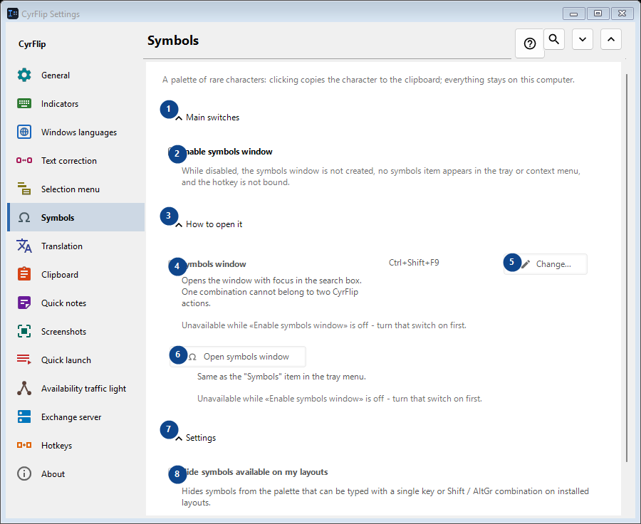
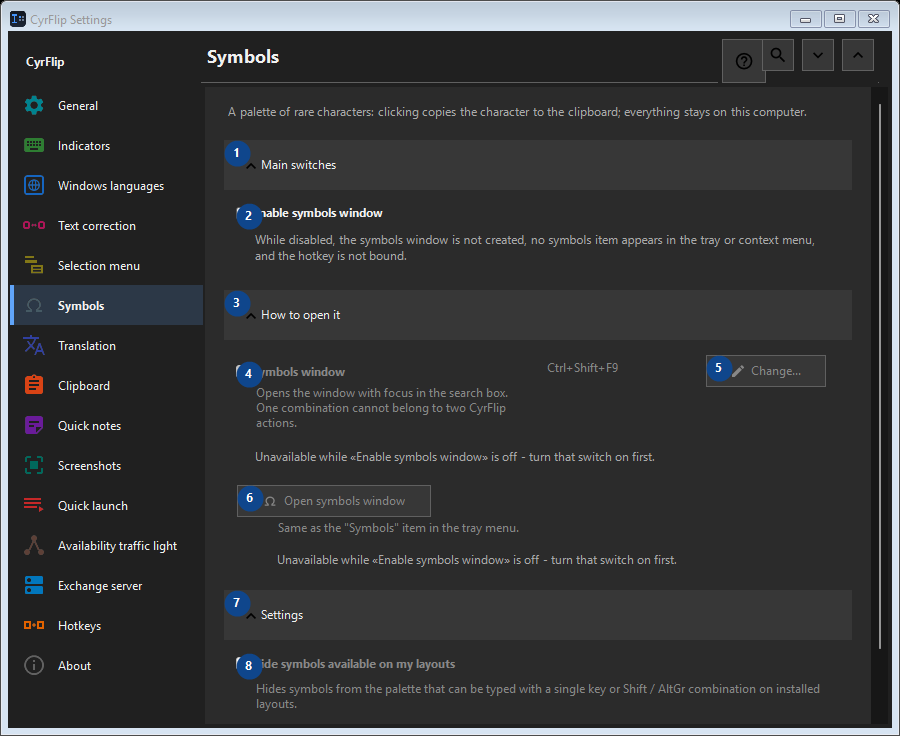

Symbols
What this is for
A palette of rare characters: clicking copies the character to the clipboard; everything stays on this computer.


In this order
Settings apply immediately. There is no required order; use the groups below.
The elements
1. Main switches
Use this command when you need the action named above. Review any confirmation before accepting it.
Your shortcuts2. Enable symbols window
While disabled, the symbols window is not created, no symbols item appears in the tray or context menu, and the hotkey is not bound.
Your shortcuts3. How to open it
Use this command when you need the action named above. Review any confirmation before accepting it.
Your shortcuts4. Symbols window
Unavailable while «Enable symbols window» is off - turn that switch on first. This control is currently unavailable. Enable its feature or select an entry first.
Your shortcuts5. Change - Symbols window
Unavailable while «Enable symbols window» is off - turn that switch on first. This control is currently unavailable. Enable its feature or select an entry first.
Your shortcuts6. Open symbols window
Unavailable while «Enable symbols window» is off - turn that switch on first. This control is currently unavailable. Enable its feature or select an entry first.
Your shortcuts7. Settings
Use this command when you need the action named above. Review any confirmation before accepting it.
Your shortcuts8. Hide symbols available on my layouts
Unavailable while «Enable symbols window» is off - turn that switch on first. This control is currently unavailable. Enable its feature or select an entry first.
Your shortcuts